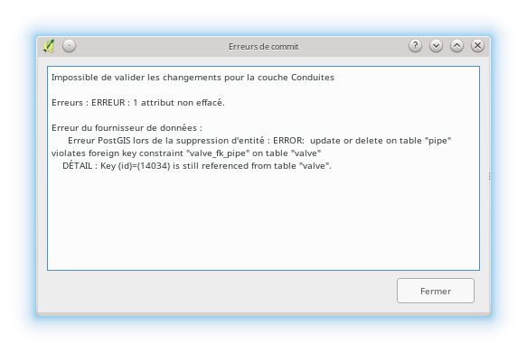
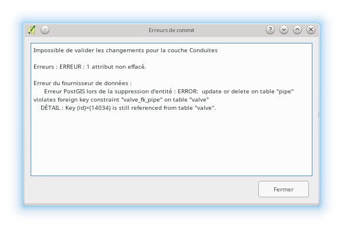

3.4. Mazání objektů v QWAT¶
Varování
Chcete-li odstranit potrubí, musíte nejprve odstranit všechny body spojené s tímto potrubím.
Data jsou propojena v základně, může dojít k chybám, pokud předcházející data nebyla předem odstraněna nebo odpojena:
 


3.4.1. Odstranění instalačních dílů / zaváděcích bodů / ventilů / hydrantů / opravných objímek a trubek¶
Začněte tím, že přejdete na vrstvu objektu, který chcete odstranit, a přepněte do režimu úprav.
Potom vyberte bod pomocí nástroje pro výběr. Můžete buď vytvořit oblast výběru, nebo jednoduše kliknout na bod, který chcete odstranit.
Varování
V tuto chvíli věnujte pozornost tomu, že máte pouze požadované body k smazání, jinak budou všechny vybrané body smazány.
Chcete-li vidět, které objekty jsou vybrány, musíte otevřít tabulku atributů.
Otevře se tabulka. Vlevo dole v této tabulce je okno s více možnostmi, kde musíte zvolit „zobrazit pouze vybrané entity“. Normálně zůstanou v tabulce pouze vaše objekty!
Pokud se objeví další objekty, klikněte na tlačítko „zrušit výběr všech“
Zavřete tabulku a začněte výběr znovu. Jakmile máte vybrány pouze body, které chcete smazat, klikněte na tlačítko „smazat vybrané entity“.